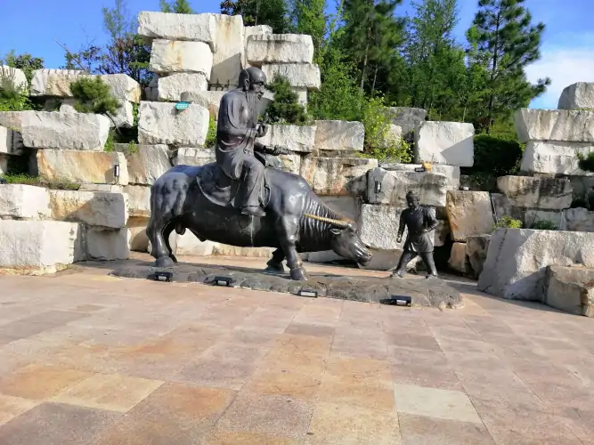
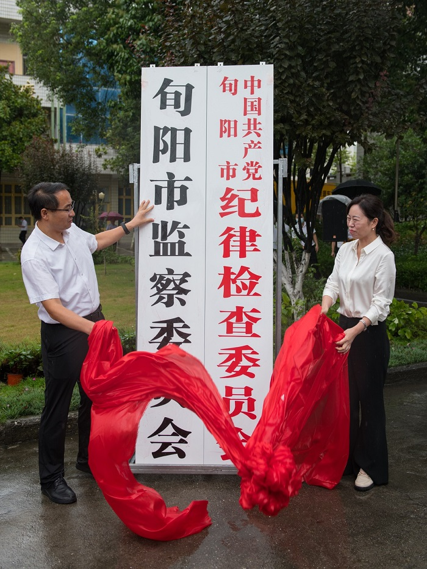

家乡简介
身处汉水之滨、旬河之畔的旬阳城，又称太极城。恒古洪荒，岁迁月移，处子般静置在陕南的一方沃土上。旬阳历史悠久，秦设旬关。县城地貌景观极为独特，一条婀娜多姿、蜿蜒流长的旬河环城270度流入汉江，犹如“S”型的旬河水将县城天然分成阴阳两鱼岛，与四周环立的8座山峰一道勾画出一幅形态逼真、惟妙惟肖的太极图，鬼斧神工般造就了中国一个神秘、神奇、神圣的八卦太极城。自古就有文人墨客这样来描绘她的壮美：“满城灯火列星案，一曲旬水绕太极”“灵山刻就天书字，旬水绘成太极图”“仞望俯瞰江河流、太极突现山城秀”“南望汉江、北镇旬河，江河锁钥旬阳城；东倚灵崖，西倚林园，秀丽妩媚太极城”旬阳市，现为陕西省直辖，安康市代管。 [13] 地处陕西省东南部，秦巴山区东段，汉江横贯其中。县城位于汉江、旬河交汇处，曲水环流，状若太极。总面积3541平方千米。

旬阳有人类生存已有六、七千年历史，新石器时代就有先民在这里繁衍生息。秦设旬关并以关置旬阳县，旬阳经历了两千多年的农业文明发展历史。受秦、楚、蜀文化和明清移民的影响，形成南北兼容的地域特色文化和民风民俗，创造了以汉剧、民歌、民舞为重点的具有鲜明地域特色的汉水文化。旬阳有优良的革命传统，红二十五军、红三军、新四军在旬阳创建过革命根据地，贺龙等老一辈革命家曾在旬阳浴血战斗，有全国唯一的一个以“红军”命名的乡镇。旬阳资源富集。地处南北过渡的内陆山区河源地带，四季分明，气候温润，是国际型优质烤烟基地、全国优质蚕茧之乡。境内分布着太极城、蜀河古镇、红军纪念园、高山草甸、田园风光、溶洞瀑布、汉江航道等自然人文景观。
旬阳因旬水得名。秦时于旬水入汉水处设旬关，并置旬阳县，西魏改旬阳为洵阳，因“洵”字生僻难认，1964年经国务院批准，复改为旬阳县。
1981年，甘溪镇红花坪出土的古剑齿象牙化石表明，在数十万年前的远古时代，旬阳就具有气候温和、林木茂盛、水源充足的自然条件，适宜于古人类生活。经过20世纪80年代前后的几次文物普查，仅县城及城关附近，就发现了龚家梁、陈家坎、李家那三处新石器时代遗址。各个遗址出土了内容比较丰富的遗物。这些遗物基本上属于仰韶文化的范畴，其中个别器物具有江汉流域的屈家岭和大溪文化的特征。这表明，远在六七千年之前，就有先民在旬阳地区生息。旬阳属于新石器时代南北文化接触地带之一。
商朝末年，武王伐纣之时，其联军中的“庸”人，就活动在今湖北省郧阳西部的堵水盆地及包括今旬阳在内的陕西省安康 市。 春秋时期，庸人一度为大巴山区先进的族落之一。之后，随着熊绎受封，楚国日益强盛，庸人逐渐衰弱。楚庄王三年（前611年）楚国大饥，庸人叛逃，楚人依葛贾之计，联合秦人、巴人，攻灭了庸国。从此，旬阳地区归属楚国。周赧王三年（前312年），秦楚战于丹阳，楚败，秦乘机夺楚汉水上游之地，新置汉中郡（治今安康市），旬阳地区遂归于秦。秦昭襄王二年（前305年）秦楚和好，第二年，楚怀王与秦昭王结盟，秦归还了原属于楚国的上庸六县，旬阳地区又重归于楚。前280年（楚顷襄王十九年），秦伐楚，楚败，割上庸及汉水以北之地予秦，此后，旬阳地区复归于秦
秦始皇二十六年（前221年），秦朝建立，分全国为三十六郡，旬阳地区属汉中郡，在今旬阳县老城设旬关，以关尹守之，同时置旬阳县，治所在旬关。 秦二世胡亥元年（前209年），刘邦部下郦商遣将攻克旬关。
汉高祖五年（前202年），汉朝建立。 初始元年（8年），王莽代汉立新，曾改汉中郡为新成郡，旬阳属之。
建武元年（25年），东汉建立，其时，今安康地区为公孙述势力范围。建武六年（30年），光武帝刘秀遣李通攻克西城县（今安康市），旬阳地区归于东汉。东汉时期，废旬阳县，以其地并入西城县，隶于汉中郡（治今汉中市）。初平二年（191年），张鲁攻取汉中郡，旬阳地区归属张鲁。建安十六年（211年），曹操打败张鲁，于西城县治置西城郡，旬阳地区属之。建安二十四年（219年），旬阳地区为益州牧刘备所有。延康元年（220年），随着关羽兵败身死和孟达投降曹魏，西城郡归属曹魏。
三国时期，旬阳地区一直属于曹魏。魏文帝曹丕即位初，并西城、上庸诸郡置上庸郡（治今湖北省竹山县上庸故城），由孟达任郡太守。不久复于原西城郡地设魏兴郡，移治洵口（今旬阳县城）。魏兴郡在三国时，隶属于魏之荆州（治今河南省新野县）。
隋开皇元年（581年），隋朝建立。开皇三年（583年），罢天下郡，洵阳郡和甲郡俱废。大业三年（607年），以郡统县，洵阳、黄土二县分隶于西城郡、上津郡。大业十三年（617年）末，唐王李渊遣李孝恭为山南道招慰使，占领西城郡。
唐武德元年（618年），李渊逼恭帝杨侑让位，建立唐朝，当年改西城郡为金州，洵阳县属之，改上津郡为上州，黄土县属之。其年，分洵阳县为三县：一曰洵城（辖境相当于今旬阳县北区旬河流域），一日洵阳（辖境相当于今旬阳县县城周围），一日驴川（一作“闾川”，辖境相当于今旬阳县南区吕河流域），并于洵阳县治置洵州，以洵阳、洵城、驴川三县属之。武德七年（624年），废洵州，其地隶属金州。贞观元年（627年），省驴川县，并入洵阳县。贞观八年（634年），省洵城县入洵阳县。同年，以已废上州之黄土县隶属金州。天宝元年（742年），改金州为安康郡，黄土县为洧阳县。至德二年（757年），肃宗李亨憎恶安禄山，厌见“安”字，改安康郡为汉南郡（又称汉阴郡）。乾元元年（758年），复改汉南郡（汉阴郡）为金州。大历六年（771年），省涫阳县。长庆元年（821年），复置清阳县。有唐一代，金州先后隶属山南道、山南西道（治兴元府，即今汉中市）、京畿道（治长安，即今西安市）及昭信军防御使。
后周显德七年（960年），掌握兵权的宋州归德军节度使赵匡胤策动“陈桥兵变”，代周称帝，建立宋朝，是为北宋。乾德四年（966年），省洧阳县入洵阳县，今旬阳县境域盖从此略定。北宋时期，洵阳县一直隶于金州，属京西南路，改昭化军节度。 南宋时，洵阳县仍一直隶于金州，先后属利州路金均房州镇抚使、京西南路、西川宣抚司、金房开达宣抚使及利州路。其间，虽处于宋金两国分界线边缘，但自绍兴十六年（1146年）以后，以县东北鹘岭关之卓驮坪（今山阳县南）和县北乾佑河之清风关（今镇安县青铜关）为界，一直为宋所有，未陷入金人之手。（顾祖禹《读史方舆纪要》卷五十六） 南宋末年，洵阳县为蒙古所有。
南宋咸淳七年（1271年），蒙古大汗忽必烈改国号为元，是为元朝。元至元十六年（1279年），南宋灭亡。元朝灭宋之后，因洵阳县境民居寥落，遂废县，设洵阳巡检司，隶于金州，属陕西行中书省兴元路总管府。
明洪武元年（1368年），明朝建国之后，派邓愈率军由均州、房州一路西进，攻下洵阳县东部牛心石诸山寨，在蜀河迫使陈友谅“汉''政权平章张子贵投降，占领洵阳。洪武三年（1370年），复置洵阳县。县治设今旬阳县城，辖今旬阳、白河二县全境及湖北省郧西县西部金钱河流域。洪武五年（1372年），洵阳还属陕西等处行中书省汉中府金州。洪武九年（1376年），改陕西等处行中书省为陕西承宣布政使司。成化十二年（1476年），以洵阳县白河堡析置白河县，析洵阳县东部汉江以北金钱河流域入新置之郧西县。次年以金州兼属郧阳巡抚。万历十一年（1583年）以水毁州城，改金州为兴安州。万历二十三年（1595年），改兴安州为直隶州，直隶于陕西承宣布政使司，不再属汉中府。有明一代，曾于洵阳县东区龙家河与蜀河汇合处设阊关巡检司，于北区乾佑河与洵河汇合处设三岔巡检司。明代中期以后，洵阳县一直是农民起义军活动频繁的地区。
明崇祯十七年（1644年），明朝灭亡，清朝建立。明清之际，洵阳地区抗清斗争彼伏此起，接连不断，直至顺治三年（1646年）前后，清军才占领了兴安州及所属的洵阳县。康熙元年（1662年），兴安州不再兼属郧阳巡抚。康熙十二（年1673年）吴三桂起兵反清。康熙十四年（1675年），清兴安游击王可成起兵响应，洵阳县遂为吴三桂所有。康熙十八年（1679年）冬，清抚远大将军图海率兵由商州旧县关南下，在洵阳两河关出其不意，一举攻破吴三桂部将韩晋卿七营，攻占洵阳县及兴安州。乾隆四十七年（1782年），兴安州升为兴安府，洵阳县属之。自乾隆末年以后，洵阳县境农民战争接连不断，川楚白莲教起义军、太平天国西路军、蓝二顺农民军等，均在这里进行过激烈斗争。 宣统三年（1911年）辛亥革命胜利，清朝的最后一位洵阳县知事白玉昆被逐。同年11月底，陕西军政府南路安抚招讨使张宝麟率部由白河县西上，派方斌为辛亥革命后首任洵阳县知事。
民国初年，洵阳县隶属陕西省汉中道。 民国二十二年（1933年）废道，直隶于省。民国二十四年（1935年），设陕西省第五行政督察专员公署，后改为陕西省安康行政督察专员公署，洵阳县属之。民国二十三年（1934年）底至民国二十五年（1936年），洵阳县东北部圣驾河、竹筒河一带，曾为中国工农红军第二十五军开创的鄂豫陕革命游击根据地的一部分。民国三十七年（1948年）4月，中国人民解放军解放洵阳县东区，中共上关县委、上关县政府迁至蜀河镇。至当年8月，洵阳县境以大棕溪、泥沟、羊山、洛河一线为界，东部为上关县人民民主政府领导，西部仍属国民党洵阳县政府管辖。同年8月至1949年5月，东区蜀河、双河一带是共产党和国民党武装力量激烈争夺的地区。 1949年5月，洵阳县民主政府在湖北省郧西县境成立。7月13日，中国人民解放军由湖北西进，再次解放洵阳县东区，8月10日，洵阳县民主政府由郧西移治蜀河。
1949年10月1日，中华人民共和国成立。同年11月26日，中国人民解放军第十九军五十七师解放洵阳县城。洵阳县民主政府随之迁至县城，隶于陕甘宁边区安康分区行政督察专员公署。1950年，陕西省人民政府成立，洵阳县改隶于陕西省安康分区专员公署；1959年洵阳县改属陕西省安康地区行政公署；1964年，经国务院批准，改“洵阳县”为“旬阳县”；1968年，“文化大革命”中，地、县行政机构改称革命委员会；1980年，旬阳县革命委员会改（复）为旬阳县人民政府，安康地区革命委员会改（复）称为安康地区行政公署，旬阳县为其10辖县之一；2000年12月31日，撤销安康地区行政公署，设安康市人民政府，旬阳县为安康市辖10县（区）之一。
2021年2月，国务院批复同意陕西省撤销旬阳县，设立县级旬阳市，以原旬阳县的行政区域为旬阳市的行政区域。旬阳市由陕西省直辖，安康市代管
2021年8月26日，陕南首个县级市旬阳市揭牌。